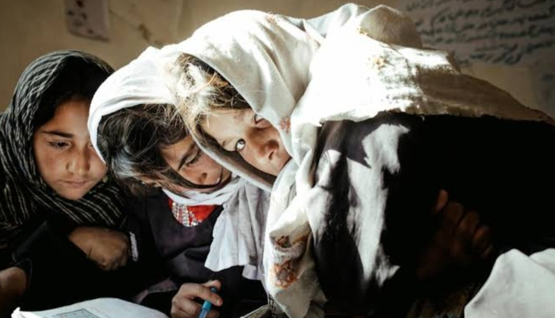

Despite an estimated 14,000 primary schools, insecurity and threats have led to the closure of many schools. Between 2001 and 2018, the country saw a tenfold increase in enrolment at all education levels from around 1 million students in 2001 to around 10 million in 2018. The number
of girls in primary school increased from almost zero in 2001 to 2.5 million in 2018. By August 2021, 4 out of 10 students in primary education were girls.
Since September 2021, the return to school for all Afghan girls over the age of 12 have been indefinitely postponed leaving 1.1 million girls and young women without access to formal education. Currently, 80% of school-aged Afghan girls and young women – 2.5 million people are out of school.
Nearly 30% of girls in Afghanistan have never entered primary education.
In December 2022, university education for women was suspended until further notice, affecting over 100,000 female students attending government and private higher education institutions.
The number of women in higher education had increased almost 20 times during 2001 and 2018 and before the recent suspension one out of three young women were enrolled in universities.
Healthcare has expanded since 2002 through Basic Packages of Health Services (BPHS), increasing access to care. The number of health centers has grown from 496 in 2003 to over 22,000, although some face challenges due to conflicts.
The World Health Organization (WHO) released a new alert today that emphasizes how critical it is to increase funding for the delivery of healthcare services in Afghanistan, especially in the underprivileged areas where the infrastructure is woefully underfunded and still vulnerable as a result of the ongoing humanitarian crisis.
Afghanistan is currently experiencing a protracted humanitarian crisis as a result of decades of instability that have been made worse by extreme droughts and natural disasters. Millions of people there are living in poverty or without access to food and health care, which puts them at serious risk of disease outbreaks and malnutrition. The prohibition on education and employment has made women and girls even more vulnerable because of the greater barriers they must overcome to obtain healthcare.
The updated 2023 Humanitarian Response Plan for Afghanistan reveals a startling rise in the population in need of humanitarian assistance immediately. According to the plan, the number of people in Afghanistan who need immediate assistance has increased from 18.4 million in August 2021 to 28.8 million. In order to address the health emergency, 3.1 million women and 7.5 million children are among the 14 million people who are presently targeted for health assistance; in the first half of 2023, 8.4 million of these individuals have already received care. With 25.7 million healthcare services rendered between 2022 and 2023, the healthcare response has been excellent.
But in spite of these initiatives and in the absence of adequate funding, 8 million Afghans will be denied access to necessary and potentially life-saving medical care, and 450,000 patients will have little to no access to life-saving services for post-trauma care, such as blood transfusions and recommendations. Furthermore, it is projected that 1.6 million individuals suffering from mental health disorders will have limited or no access to psychosocial support and mental health consultation.
The WHO Alert emphasizes the serious repercussions that Afghanistan's healthcare system will face if underfunding persists. Delivering comprehensive services to Afghans, particularly women and children, is proving to be extremely difficult for the health sector. This has led to increased vulnerability and fragmentation, especially in underserved areas.
"The situation in Afghanistan is dire, and the lack of resources and funding to support health workers and facilities is putting countless lives at risk," said WHO Director-General Dr. Tedros Adhanom Ghebreyesus. The most affected groups are women and children. I urge contributors to make large gifts so y so that we can carry on with our efforts to save lives.
In an effort to address the ongoing humanitarian health crisis in Afghanistan, Dr. Ahmed Al Mandhari, Regional Director of WHO for the Eastern Mediterranean, called on the international community to join forces with WHO. "It is our collective responsibility to act now to support the healthcare system in Afghanistan," he declared. Inaction has disastrous effects and could have a long-term effect on the health and welfare of the Afghan people."
The WHO Representative to Afghanistan, Dr. Luo Dapeng, took the opportunity to thank partners and voiced concern about the underfunding of the health system and the need for immediate action. "The situation in Afghanistan is dire and requires immediate attention," he declared. For a nation that already Underfunding of the healthcare system is a major humanitarian concern for those impacted by decades of conflict. One cannot stress the effects of this underfunding. In addition to expressing gratitude to our current partners for their assistance thus far, I also want to urge them to step up their game.
While simultaneously building on the achievements seen in 2022, WHO will continue collaborating with its exceptional partners in the second half of 2023 to address serious health emergencies by offering life-saving medical interventions. Delivering on the WHO's strategic areas of protecting people on a daily basis, reaching everyone, everywhere, and prioritizing mothers and children, leading the health sector by coordinating the health partners, and driving impact in providing quality healthcare in Afghanistan still require a lot of work.
The number of midwives has increased, with needs estimated at around 8,000. Child mortality has decreased from one in four to 16%, and infant mortality has dropped from 165 per 1000 births to 77 per 1000.
Maternal mortality has also reportedly decreased significantly.
Almost one-third (30.2%) indicated that changed working conditions negatively impacted their ability to provide quality care, and 26.2% reported an increase in obstetric and newborn complications. Health workers also reported (38.1% )an increase in sick child needs and an increase in child malnutrition 57.1%.
Widespread poverty has led to around 40% of children under five being chronically malnourished, with 75% suffering from mineral deficiencies. An adequate well-balanced diet is the bedrock of child survival, health and development. Well-nourished children are more likely to be healthy, productive, and ready to learn. Undernutrition, by the same logic, is devastating. It blunts the intellect, saps productivity, and perpetuates poverty.
Afghanistan has one of the world’s highest rates of stunting in children under five: 41 percent.
The rate of wasting, the extreme manifestation of severe acute malnutrition, in Afghanistan is extremely high: 9.5 per cent.
One in three adolescent girls suffers from anaemia.
Only half of Afghan babies are exclusively breastfed in their first six months. Only 12 per cent of Afghan children aged 6-24 months receive the right variety of food in the quantity needed for their age.
A country’s development needs brainpower & children need nourishment to feed the future. Afghanistan has one of the world’s highest rates of stunting in children under the age of five: 41 per cent. Stunting is a sign of chronic undernutrition during the most critical periods of growth. It prevents children from reaching their potential. Stunted children are more likely to contract diseases, less likely to get basic health care, and do not perform well in school.
The rate of wasting in Afghanistan is also extremely high. Wasting, as its name suggests, is literally wasting away to skin and bones. Children are simply not getting enough food. The crushing result of acute malnutrition, it poses an immediate threat to a child’s survival. Due to rising insecurity and COVID-19 pandemic, there is an increase in the number of wasted children in Afghanistan and this situation remains a priority.
Chronic nutritional deficiency in Afghanistan is largely the result of the children eating the wrong types of food, in addition to not enough food. For example, only half of Afghan babies are exclusively breastfed in their first six months, and their exposure to contaminated liquids or foods places them at a greater risk of life-threatening illnesses such as diarrhoea and pneumonia. Most do not any fruit or vegetables on any given day.
Mothers are equally malnourished. When mothers have inadequate diets, a harmful cycle is created – malnourished infants grow up to become stunted mothers, generation after generation. This is a cycle we must break.
Despite impressive improvements in the past decade, Afghanistan’s health system still faces a number of challenges. Some cultural practices and preferences related to food limit the potential development of the next generation of Afghanistan leaders. Knowledge of good diets remains limited. Over the next year UNICEF will support the Government in rolling out an intensive information campaign. Nutrition services are part of all government health services however there are
areas that are less accessible for regular services leaving some children at high risk. UNICEF helps by providing health and nutrition mobile services, however these could be expanded further. Mothers are not aware of their own nutritional needs. We need to improve their knowledge of, and access to, a healthy diet for themselves and their families. UNICEF will support the government in training and supporting Nutrition Counsellors, Community Health Workers, Midwives and other health
workers who can teach families how to make small improvements in their eating habits that can result in big health gains.
The politics of Afghanistan has been a complex and evolving landscape, heavily influenced by the country's history, culture, and ongoing conflicts. However, please note that the situation may have changed since then, and it's always a good idea to consult up-to-date sources for the most accurate information. Afghanistan is a presidential republic, where the President serves as the head of state and government. The political system is based on a constitution adopted in 2004, following the ousting
of the Taliban regime by a U.S.-led coalition in 2001. The political scene in Afghanistan has been characterized by a diverse range of political parties, ethnic groups, and regional power brokers. The country has a multi-ethnic society, with Pashtuns, Tajiks, Hazaras, Uzbeks, and other smaller ethnic groups playing significant roles in politics. The two dominant political figures in Afghanistan have historically been the President and the Chief Executive Officer (CEO). The CEO position was created in 2014
as part of a power-sharing agreement between Ashraf Ghani and Abdullah Abdullah to resolve a disputed presidential election. However, the specific political structure and power-sharing arrangements may have changed since my knowledge cutoff. Political stability in Afghanistan has been a significant challenge due to ongoing security concerns, insurgency, and the influence of regional and international actors. The Taliban, an Islamist militant group, has been a major force in Afghan politics, seeking to establish
its interpretation of Islamic law and control over the country. The group has engaged in armed conflict with the Afghan government and international forces, leading to significant political instability. Afghanistan has also faced challenges related to corruption, weak governance, and the rule of law. These issues have hindered the country's political development and economic progress. In terms of international relations, Afghanistan has been a focal point for regional and global powers due to its strategic location and natural resources.
Various countries, including the United States, China, Russia, Iran, and Pakistan, have been involved in Afghan affairs, either through military interventions, diplomatic efforts, or economic assistance. It's important to note that the political situation in Afghanistan has been highly fluid, and events on the ground can rapidly change the dynamics of power and influence. The recent developments in Afghanistan, such as the withdrawal of U.S. and NATO forces and the Taliban's resurgence, may have significantly altered the political landscape. Therefore,
it is crucial to consult updated sources to gain a comprehensive understanding of the current political situation in Afghanistan In summary, Afghanistan faces a complex situation with progress in education, healthcare, and infrastructure amid ongoing challenges such as insecurity, poverty, and dependence on foreign aid. The country has made strides in improving health indicators and infrastructure, but issues like educational access, gender disparities, and nutritional challenges remain pressing concerns. Additionally, the uncertainty regarding the sustainability of
progress in the face of reduced foreign aid adds another layer of complexity to Afghanistan's development landscape.